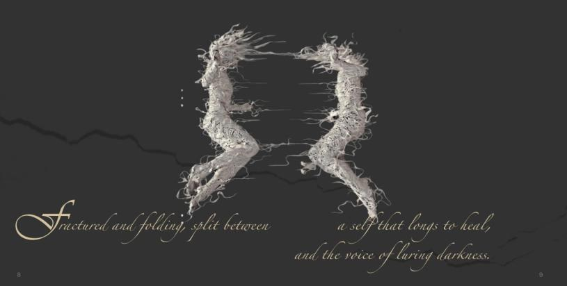
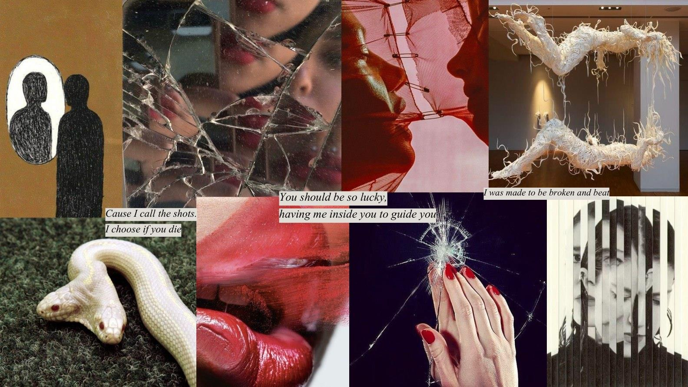
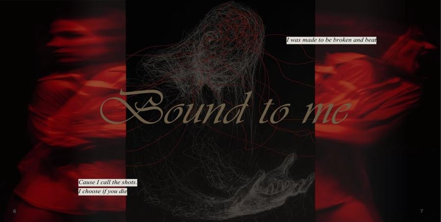
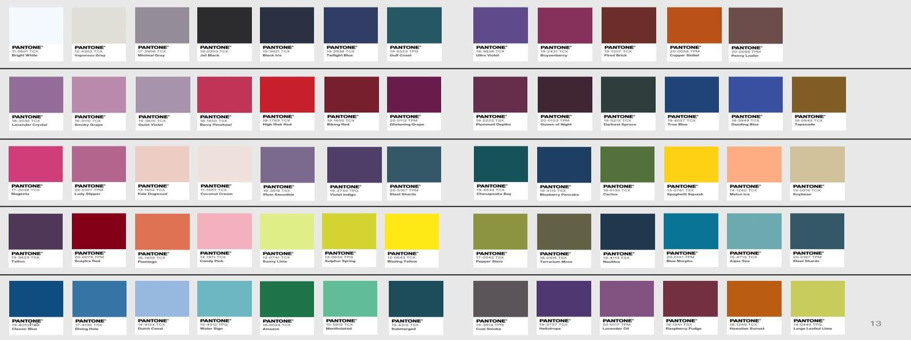
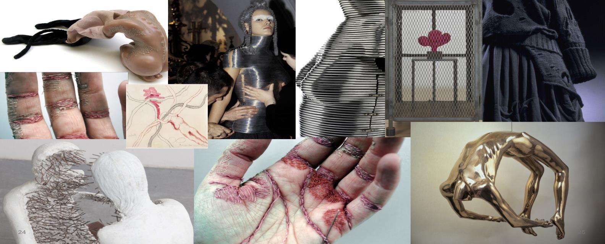
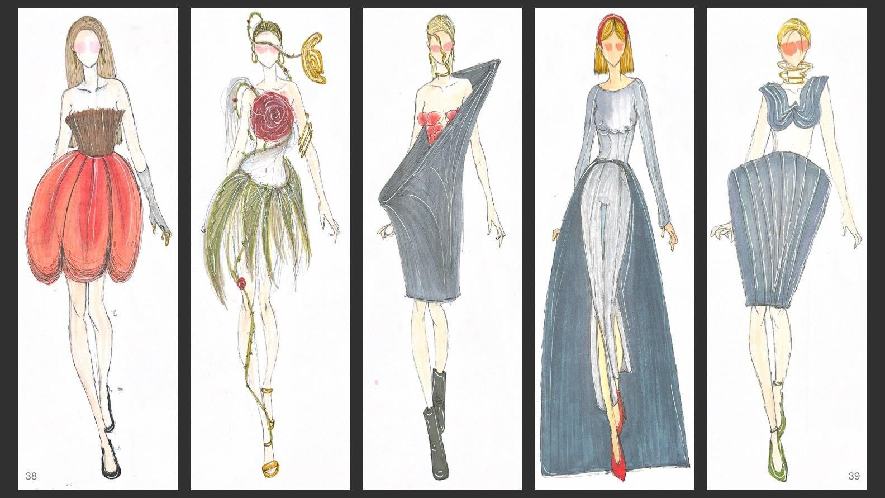

I Am Two
Concept Development & Fashion Illustration
An exploration of identity, emotion and transformation.

OVERVIEW
The idea.
I Am Two explores the tension between different aspects of identity: shadow and light, restraint and release, fragmentation and renewal. The concept uses the Ouroboros as an image of transformation, suggesting that opposing forces can exist within the same person and that change can emerge through conflict. The project began as an emotional narrative and developed into a visual concept book, with connected colour stories, symbolic imagery, museum and textile research, material investigations and fashion silhouettes. Colour acts as a narrative device rather than simply a decorative choice; the palettes represent different emotional states as the story develops. The final section presents five original fashion illustrations informed by the research. Together, the work examines how an intangible idea about the self can become a distinctive visual direction for fashion.
A closer look.





PROCESS
From research
to realization.
I began with a written exploration of duality and the Ouroboros motif. The opening imagery considers opposing forces inhabiting the same person, including the pull between protection and exposure, destruction and renewal. I gathered references that expressed these ideas through surfaces, movement, forms and contrasting visual atmospheres. The concept book then develops colour stories, including Echo of the Fall, The Cracks, When I Meet Myself and Skin of My Skin. Each section uses a selected palette and accompanying imagery to communicate a different part of the emotional progression. The colour work was followed by museum and textile references, materiality studies and research into sculptural forms. I explored the way distortion, organic shapes, floral details and changes in proportion might represent inner conflict and transformation. Rather than illustrating a single outfit repeatedly, I developed five silhouettes with distinct features that still belonged to the same concept. These became the concluding design expressions of the project.
REFLECTION
What I learned.
This project helped me recognize how strongly I connect to the conceptual side of fashion. I enjoyed developing a narrative in which colour, symbolism, materials and silhouette were all responsible for telling part of the story. One challenge was maintaining a coherent identity while exploring very different emotional states and visual references. It required editing and looking beyond the immediate beauty of an image to consider what it communicated. The illustrations also pushed me to move from abstract ideas toward recognizable designs. I Am Two strengthened my confidence in creative direction, colour storytelling and fashion concept development, and remains an example of the kind of expressive research I want to continue exploring.